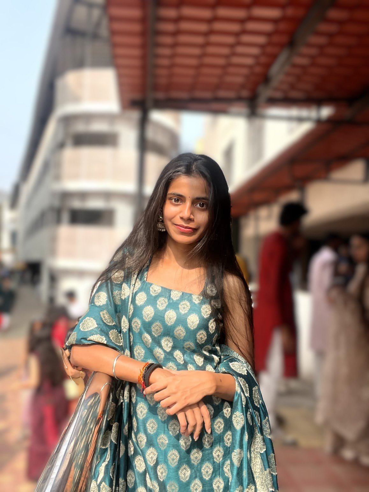

I’m an MCA student passionate about data analytics, data science and turning raw data into meaningful insights. I enjoy solving problems using Python, SQL and machine learning techniques.

Get to know me
I’m an MCA student with a strong interest in data analytics and data-driven problem solving. I enjoy working with Python, SQL, and data science techniques to transform raw data into meaningful insights. Through academic and personal projects, I’ve explored machine learning, deep learning, and analytics-based solutions. I’m currently building my skills and looking forward to starting my career as a Data Analyst, where I can use data to support smarter business decisions.
Some of the projects I've worked on
An intelligent financial wellness solution designed to analyze financial information and provide personalized insights and recommendations to help users make better financial decisions.
A machine learning-based system that analyzes resumes and helps identify candidates based on relevant skills, qualifications and job requirements.
A deep learning and data science project focused on recognizing American Sign Language gestures using image-based data and machine learning techniques.
A Python-based application designed to track and manage driving-related information in a simple and organized way.
A Java-based voting system designed to provide a simple and structured platform for conducting online voting and managing voting information.
Technical expertise and professional strengths
I'm always open to new opportunities and conversations
Feel free to reach out. I'd be happy to connect, collaborate and discuss opportunities in data analytics.